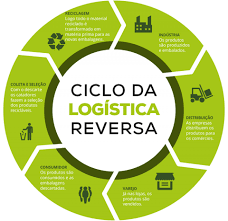

Segundo o Ministério do Meio Ambiente:
"A Logística Reversa é um instrumento de desenvolvimento econômico e social caracterizado por um conjunto
de ações, procedimentos e meios destinados a viabilizar a coleta e a restituição dos resíduos sólidos ao
setor empresarial, para reaproveitamento, em seu ciclo ou em outros ciclos produtivos, ou
outra destinação final ambientalmente adequada".
Em resumo, o indivíduo responsável pela criação do
produto em questão se compromete a recebê-lo a fim de realizar o descarte de forma adequada.
Esse descarte muitas vezes se torna inviável ao consumidor, para tal, a empresa se torna como ator fundamental
para a manutenção da qualidade do meio ambiente.

Mais um pouco sobre Nós
A Enroter é fruto do espírito empreendedor do nosso magnânimo Lucas Fernandes de Paiva, que acredita
na responsabilidade individual como caminho para um mundo melhor. A ideia para fundar a Enroter veio durante
uma de suas viagens à Sibéria.
Com sua ideia formada e uma sobre-humana força de vontade Lucas fundou a Enroter e se tornou a pessoa
mais rica da sua turma de pilates. Mais informações sobre nosso fundador em Lucas.com.br
Nós aqui na Enroter acreditamos que a cooperação salvará o mundo.
"Andorinha sozinha não faz verão", ou algo do tipo, não sei, não sou uma andorinha, por enquanto.